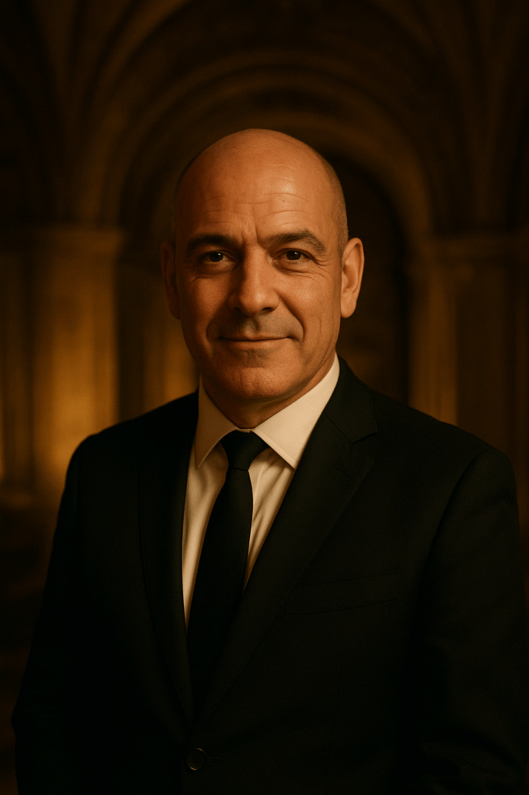
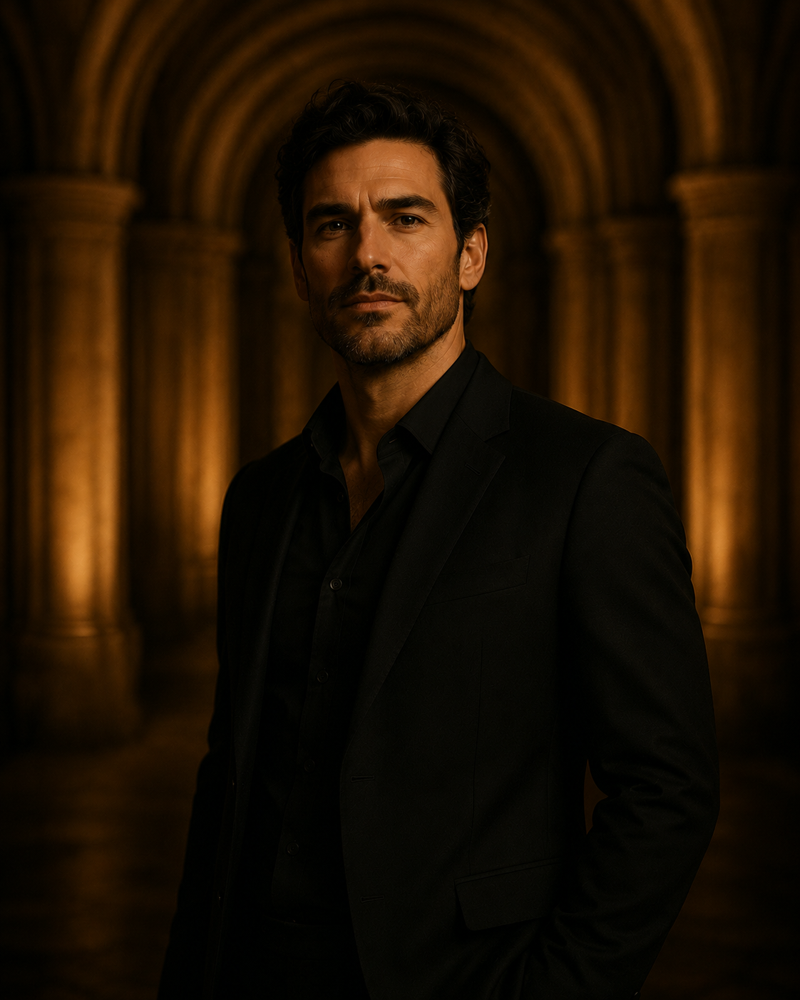

MANAGEMENT
The vision that guides this palace.
The Management of La Cúpula carries the responsibility of preserving the house’s heritage while guiding its vision into the future. Their role extends beyond coordination, they cultivate atmosphere, natural talent, and ensure that every guest experiences the refinement that defines us.

GENERAL DIRECTOR
Adrià Montclar
As a direct descendant of the original founder, Adrià preserves the legacy of La Cúpula while guiding it with contemporary vision. He upholds the principles established centuries ago—tradition, hospitality, and refined conduct—translating them into the expectations of modern fine dining.
OPERATIONS DIRECTOR
Claudia Benet
Ensures the seamless functioning of every service, overseeing logistics, training, and coordination.

CREATIVE DIRECTOR
Rafael Mires
Designs the sensory identity of La Cúpula, curating lighting, ambience, and artistic direction.